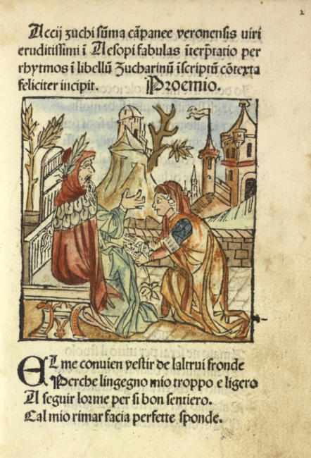
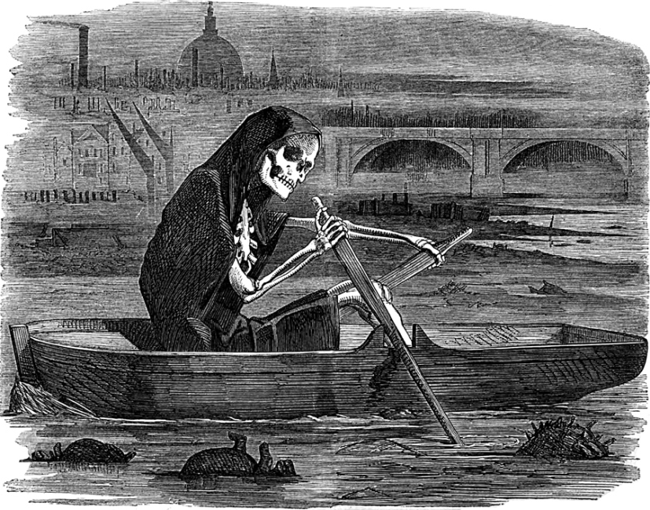
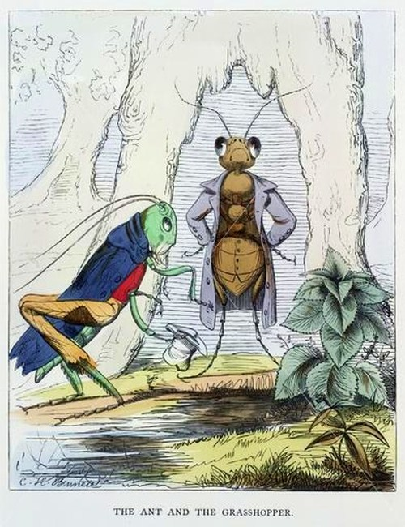
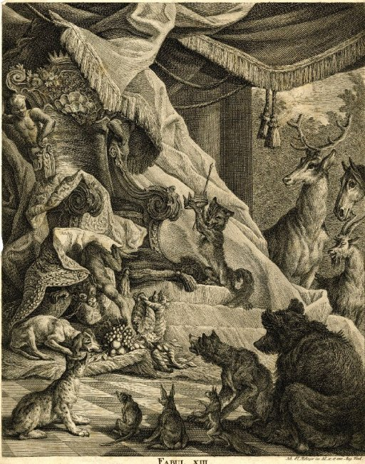
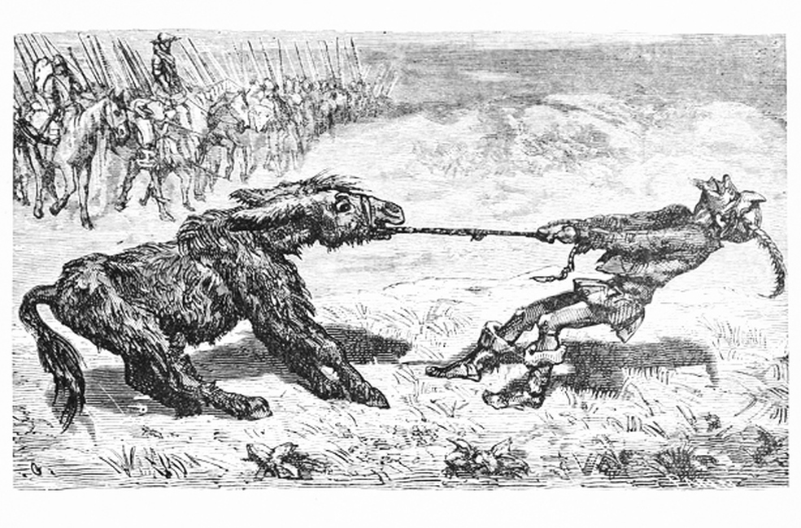
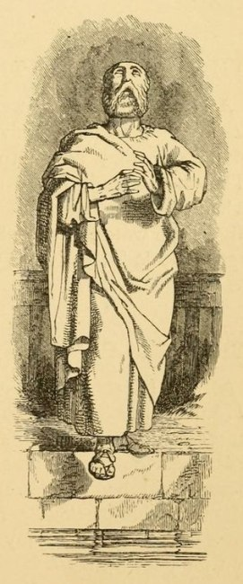
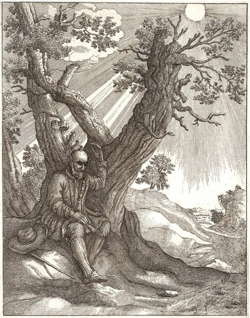
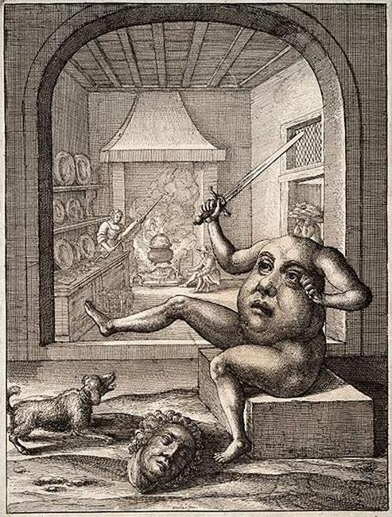

×







❮
❯
Aesop's Fables, or the Aesopica, is a collection of fables credited to Aesop, a slave and storyteller believed to have lived in ancient Greece between 620 and 564 BCE. Of diverse origins, the stories associated with his name have descended to modern times through a number of sources and continue to be reinterpreted in different verbal registers and in popular as well as artistic media.
The fables originally belonged to the oral tradition and were not collected for some three centuries after Aesop's death. By that time a variety of other stories, jokes and proverbs were being ascribed to him, although some of that material was from sources earlier than him or came from beyond the Greek cultural sphere.
Titles
Aesop and the Ferryman
Ant and the Grasshopper
Ape and the Fox
Ass and his Masters
Ass and the Pig
Ass Carrying an Image
Ass in the Lion's Skin
Astrologer who Fell into a Well
Bald Man and the Fly
Bear and the Travelers
Beaver
Belly and the Members
Bird-catcher and the Blackbird
Bird in Borrowed Feathers
Boy Who Cried Wolf
Bulls and the Lion
Cat and the Mice
Crab and the Fox
Cock and the Jewel
Cock, the Dog and the Fox
Crow and the Pitcher
Crow and the Sheep
Crow and the Snake
Deer without a Heart
Dog and Its Reflection
Dog and the Sheep
Dog and the Wolf
dogs and the lion's skin
Dove and the Ant
Eagle and the Beetle
Eagle and the Fox
Eagle Wounded by an Arrow
Farmer and his Sons
Farmer and the Sea
Farmer and the Stork
Farmer and the Viper
Fir and the Bramble
Fisherman and his Flute
Fisherman and the Little Fish
Fly and the Ant
Fly in the Soup
Fowler and the Snake
Fox and the Crow
Fox and the Grapes
Fox and the Lion
Fox and the Mask
Fox and the Sick Lion
Fox and the Stork
Fox and the Weasel
Fox and the Woodman
Fox, the Flies and the Hedgehog
Frightened Hares
Frog and the Fox
Frog and the Mouse
Frog and the Ox
Frogs and the Sun
Frogs Who Desired a King
Goat and the Vine
Goose that Laid the Golden Eggs
Hare in flight
Hercules and the Wagoner
Honest Woodcutter
Horkos, the god of oaths
Horse and the Donkey
Horse that Lost its Liberty
Impertinent Insect
Jar of Blessings
Kite and the Doves
Lion and the Mouse
Lion Grown Old
Lion in Love
Lion's Share
Lion, the Bear and the Fox
lion, the boar and the vultures
Man and the Lion
Man with two Mistresses
Mischievous Dog
Miser and his Gold
Momus criticizes the creations of the gods
Mountain in Labour
Mouse and the Oyster
North Wind and the Sun
Oak and the Reed
Old Man and Death
Old Man and his Sons
Old Man and the Ass
Old Woman and the Doctor
Old Woman and the Wine-jar
Oxen and the Creaking Cart
Rivers and the Sea
Rose and the Amaranth
Satyr and the Traveller
Shipwrecked Man and the Sea
Sick Kite
Snake and the Crab
Snake and the Farmer
Snake in the Thorn Bush
Statue of Hermes
Swan and the Goose
Tortoise and the Birds
Tortoise and the Hare
Town Mouse and the Country Mouse
Travellers and the Plane Tree
Trees and the Bramble
Trumpeter Taken Captive
Two Pots
Venus and the Cat
Walnut Tree
War and his Bride
Washing the Ethiopian white
Wolf and the Crane
Wolf and the Lamb
Wolf and the Shepherds
Woodcutter and the Trees
Young Man and the Swallow
Zeus and the Tortoise

{kind=link}
{kind=link}
{kind=link}
{kind=link}
{kind=link}
{kind=link}
{kind=link}